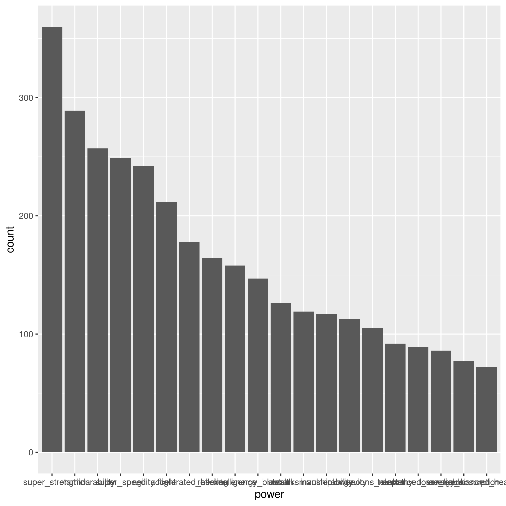

More Challenging Data Situations
Consider our now familiar data set of super hero powers.
d <- read_csv("source_data/super_hero_powers.csv");This is not tidy. One "observation" in this case is:
hero, power-name, posseses
But our data set is instead:
hera, power-name1, power-name2, ...
(NB we could remove the posseses column and just leave out observations where it would be F).
To use dplyr and ggplot effectively (and to respect standards) we need to transform our data set.
Pivoting
For our own sanity, let's focus on a smaller subset of columns. But first some other tidying tricks:
names(d) names(d) [1] "hero_names" "Agility" [3] "Accelerated Healing" "Lantern Power Ring" [5] "Dimensional Awareness" "Cold Resistance" [7] "Durability" "Stealth" [9] "Energy Absorption" "Flight" [11] "Danger Sense" "Underwater breathing" [13] "Marksmanship" "Weapons Master" [15] "Power Augmentation" "Animal Attributes" ...
These names are bad. They got spaces and other things in them and we want to be able to use $. Let's clean them up a bit.
Getting and Setting Names
library(stringr)
names(d) <- names(d) %>%
tolower() %>%
str_replace_all(" - ", " ") %>%
str_replace_all(" ","_");
names(d)
[1] "hero_names" "agility"
[3] "accelerated_healing" "lantern_power_ring"
[5] "dimensional_awareness" "cold_resistance"
[7] "durability" "stealth"
[9] "energy_absorption" "flight"
[11] "danger_sense" "underwater_breathing"
[13] "marksmanship" "weapons_master"
[15] "power_augmentation" "animal_attributes"Much better!
pivot_longer
A tidbit:
`%without%` <- function(strs, remove_these){
strs[!(strs %in% remove_these)];
}Now:
td <- pivot_longer(d, names(d) %without% c("hero_names"), names_to="power", values_to="has");
# A tibble: 111,389 x 3
hero_names power has
<chr> <chr> <lgl>
1 3-D Man agility TRUE
2 3-D Man accelerated_healing FALSE
3 3-D Man lantern_power_ring FALSE
4 3-D Man dimensional_awareness FALSE
5 3-D Man cold_resistance FALSE
6 3-D Man durability FALSE
7 3-D Man stealth FALSE
8 3-D Man energy_absorption FALSE
9 3-D Man flight FALSE
10 3-D Man danger_sense FALSEFactors, Rank and Order.
Let's try to make a plot of how common these powers are:
library(tidyverse); ## strictly superfluous
p <- ggplot(td %>% filter(has==TRUE), aes(power)) +
geom_histogram(stat="count");
ggsave("images/powers-histo1.png",plot=p);
This is almost useless.
Deseridata:
- Order by count
- Limit to top 20 or so?
- Make the Powers Readable.
Factor Variables
We often wish to make explicit the implicit fixed character of a set of discrete data values.
In our case our super powers are drawn from a fixed unordered set. They happen to be represented as strings but that doesn't really capture their true character.
A random string which happens to equal "healing factor" isn't really a "healing factor" entry in our dataset.
Factors make this explicit.
With GGPlot
We can use ordered Factors to make ggplot show things in a certain order:
power_counts <- td %>%
group_by(power) %>%
summarize(count=sum(has)) %>%
arrange(desc(count));
td$power <- factor(td$power, levels=power_counts$power);
p <- ggplot(td %>% filter(has==TRUE), aes(power)) +
geom_histogram(stat="count");
ggsave("images/powers-histo2.png",plot=p);
Still bad!
Top twenty:
tdtt <- td %>% filter(td$power %in% head(power_counts,20)$power);
p <- ggplot(tdtt %>% filter(has==TRUE), aes(power)) +
geom_histogram(stat="count");
ggsave("images/powers-histo3.png",plot=p);Ok, now about those tick marks.
p <- ggplot(tdtt %>% filter(has==TRUE), aes(power)) +
geom_histogram(stat="count") +
theme(axis.text.x = element_text(angle = 90, hjust = 1));
ggsave("images/powers-histo4.png",plot=p);
Preliminary Abstractions
We should abstract our plot, so we can re-use it easily:
plot_counts <- function(d,title){
power_counts <- d %>% group_by(power) %>%
summarize(count=sum(has)) %>%
arrange(desc(count));
d$power <- factor(d$power,levels=power_counts$power);
d <- d %>% filter(power %in% head(power_counts,20)$power);
ggplot(d %>% filter(has==TRUE), aes(power)) +
geom_histogram(stat="count") +
theme(axis.text.x = element_text(angle = 90, hjust = 1)) +
labs(title=title);
}This is an example of abstraction: the steps to build a plot are the same we just filter the data differently.
Joining to Gender
An example of a join:
..
library(gridExtra);
gender_info <- read_csv("source_data/heroes_information.csv") %>%
select(name, Gender) %>% distinct() %>% rename(hero_names=name);
power_gender <- td %>% inner_join(gender_info, by="hero_names");
p_male <- plot_counts(power_gender %>% filter(Gender=="Male"),
title="Male");
p_female <- plot_counts(power_gender %>% filter(Gender=="Female"),
title="Female");
p <- grid.arrange(p_female, p_male,nrow=2);
ggsave("./images/hist_fm.png",plot=p);
How else might we visualize this data?
Taxonomy of Joins